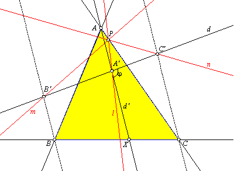
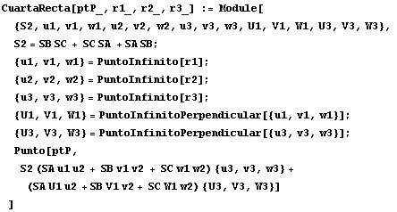
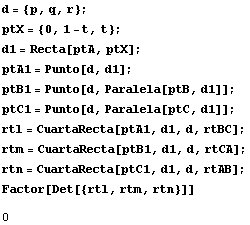

|
Sean, en un mismo plano, un triángulo ABC y una recta arbitraria d. Y sea j un ángulo tal que 0£j£p. Sobre d tomamos tres puntos A', B', C' de manera que cada recta AA', BB', CC' forme con d un ángulo j. Sean l, m, n tres rectas por A', B', C' respectivamente; de tal modo que el ángulo entre l y BC sea -j igual al que forman m con CA y n con AB. Demostrar que l, m, n son concurrentes. |
|
Propuesto por José Carlos Chavez Sandoval
|

Usaremos Mathematica y coordenadas baricéntricas.
La clave es una función creada a partir de una fórmula de Paul Yiu para resolver el siguiente problema:
Dadas las ecuaciones baricéntricas de tres rectas r1, r2, r3 obtener la ecuación de una cuarta recta r4 tal que los ángulos orientados Ð(r1, r2) y Ð(r3, r4) son iguales.
Para obtener más información sobre esta fórmula puede leerse el trabajo Giros con baricéntricas.
El código de la función citada es:

Para resolver nuestro problema usamos la función de esta manera: Tomamos una recta cualquiera d y un punto cualquiera X sobre la recta BC. La recta d' será la recta AX.

Por ser nulo el determinante las rectas son concurrentes.